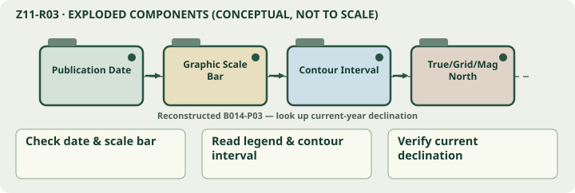

Z11-R03 · Navigation, weather and rescue · Reconstruction draft
Read map legend, scale, publication date and north reference
Inspect marginal map data before taking any bearing or measuring distances on paper or offline sheets.
Lineage · B014 reconstruction · r01 slot R03 (original B014-P03 missing)
When it applies · Preparing and verifying USGS topographic maps or trail maps prior to route navigation; reconstructs missing B014-P03.
Equipment · Current topographic map, baseplate compass and current local magnetic declination value.

Actions
- Check the map publication date, scale ratio, contour interval and symbol legend first—outdated sheets may omit washed-out bridges, closed roads or rerouted trails.[N01, N02]
- Identify the north reference diagram on the map margin distinguishing true north, grid north and dated magnetic north, then look up current declination for your trip date and location.[T08, N08]
- Treat historical public-domain sheets (such as 1965 USGS quadrangles) strictly as symbol-learning aids rather than current field navigation or declination sources.[N01, N04]
Failure recognition · Measuring trail distance on a 1:50,000 sheet using a 1:24,000 ruler, or applying a 40-year-old printed declination value.[N01, T08]
Verify · State the map's publication year, scale, contour interval and current local declination before plotting your route.[N01, T08, ED]
Stop or change course · If the map margin lacks scale, north reference or legible symbols—or omits surrounding bailout roads—obtain a complete current sheet before departing.[N01, E01]
Evidence and editorial notes
- E01 · Minnesota DNR · Safety in State Forests (current web edition)
- Section: Before your trip and while visiting · Conditions: State-forest travel and backcountry planning
Support: Know the route, check conditions, carry navigation and safety equipment and share trip details.
Limitations: Conditions and trail maintenance vary seasonally across forest units. · Conflicting evidence: None; aligns with NPS-H.
Editorial note: Foundation for trip planning and pre-departure risk checks. · Specialist reviewer: Land management and search and rescue
Primary source · checked 2026-11-24 - N01 · USGS · US Topo Maps for America (current web edition)
- Section: US Topo Maps > Coordinate Grids, Scale and Currency · Conditions: Map reading and trip planning in the United States
Support: USGS topographic maps provide elevation contours, hydrography, roads, land cover and scale/date metadata; check publication date because trails, roads and structures change over time.
Limitations: Historical topo sheets (such as 1965 Ely quadrangle) illustrate symbols only and never establish current routes or declination. · Conflicting evidence: None; aligns with USGS-MAP-R and NOAA-D.
Editorial note: Grounds map margin, scale, date and historical-excerpt limits in Z11. · Specialist reviewer: Cartography and navigation
Primary source · checked 2026-11-24 - N02 · USGS · Topographic Map Symbols (agency PDF)
- Section: Topographic Map Symbols > Contours, Water, Vegetation and Boundaries · Conditions: Interpreting standard USGS 1:24,000 and US Topo map sheets
Support: Contour spacing indicates slope steepness, index contours give elevation values, blue features mark water/wetlands and standard symbols distinguish roads, trails, cliffs and marshes.
Limitations: Small terrain hazards (boulders, undercut banks, fallen timber, thin ice) fall below map contour interval resolution. · Conflicting evidence: None; anchors terrain and contour interpretation cards.
Editorial note: Explains contour reading alongside map-resolution limitations. · Specialist reviewer: Cartography and search and rescue
Primary source · checked 2026-11-24 - N04 · USGS · Are USGS Topographic Maps Copyrighted (current web edition)
- Section: Public Domain Status of USGS Topographic Maps · Conditions: Reproducing authentic USGS historical/current map excerpts for instruction
Support: USGS topographic maps are U.S. government works in the public domain; credit USGS, sheet name, scale, date and map ID clearly and state whether a historical sheet is for symbol study only.
Limitations: Commercial map overlays or private trail layers on top of USGS bases may carry separate copyright. · Conflicting evidence: None; governs Ely 1965 map excerpt attribution in Z11.
Editorial note: Ensures compliant map provenance and explicit historical-date cautions. · Specialist reviewer: Cartography and intellectual property review
Primary source · checked 2026-11-24 - N08 · NOAA NCEI · Magnetic Declination (current web edition)
- Section: NOAA Magnetic Declination > definition and true-bearing conversion · Conditions: Using magnetic baseplate compasses near metal, electronics or iron-rich rock
Support: Declination is between true and magnetic north and varies by location and time. Grid convergence is separate. A device may already apply a correction.
Limitations: NOAA definition does not establish site-specific interference distances or diagnosis of magnetic anomalies. · Conflicting evidence: Aligns with B014-P13 and B014-P14.
Editorial note: Grounds declination conversion, metal-clearance and magnetic-anomaly cards. · Specialist reviewer: Navigation and geophysics safety
Primary source · checked 2026-11-24 - T08 · NOAA NCEI · Magnetic Declination (current web edition)
- Section: Definition and bearing conversion · Conditions: Trip planning with a map and compass
Support: Declination varies by date and geographic position. Determine the map reference and current local value.
Limitations: Outdated map margins can have meaningful declination drift over decades. · Conflicting evidence: None; retained for navigation reconstructions.
Editorial note: Preserved for Z11 continuity. · Specialist reviewer: Navigation and search and rescue
Primary source · checked 2026-11-24
Source lineage · B014 reconstruction · r01 slot R03 (original B014-P03 missing) · Classification · Reconstruction draft.